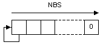
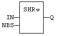
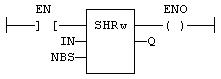

Function
Shift bits of a register to the right.
|
Name |
Type |
Description |
|
IN |
INT |
16-bit register. |
|
NBS |
INT |
Number of shifts (each shift is 1 bit). |
|
Name |
Type |
Description |
|
Q |
INT |
Shifted register. |

In LD language, the input rung (EN) enables the operation, and the output rung keeps the state of the input rung. In IL language, the first input must be loaded before the function call. The second input is the operand of the function.
Q := SHRw (IN, NBS);

The shift is executed only if EN is TRUE.
ENO has the same value as EN.
